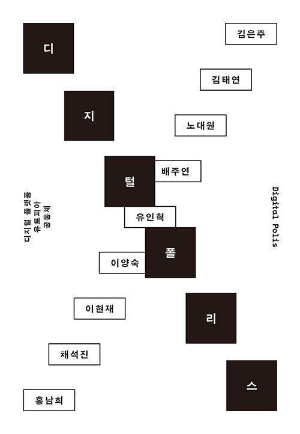
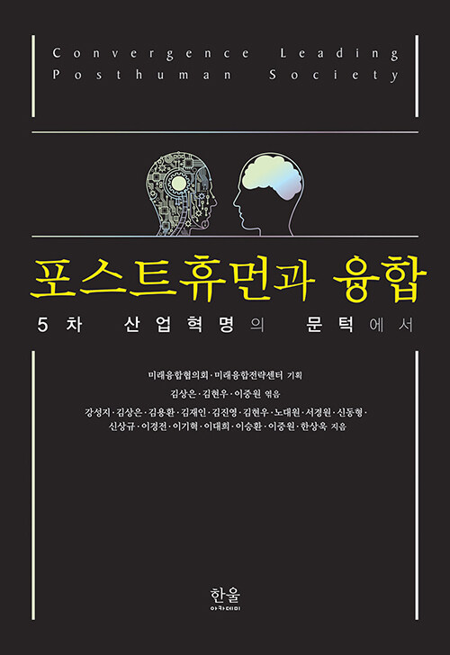
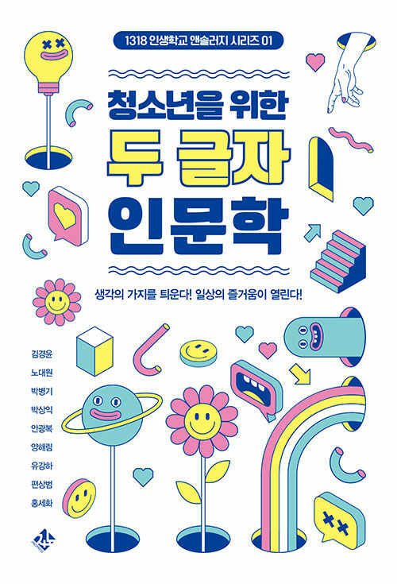
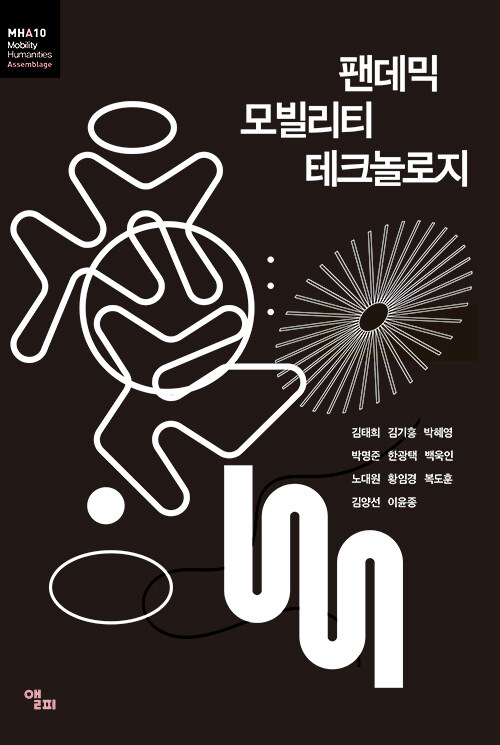
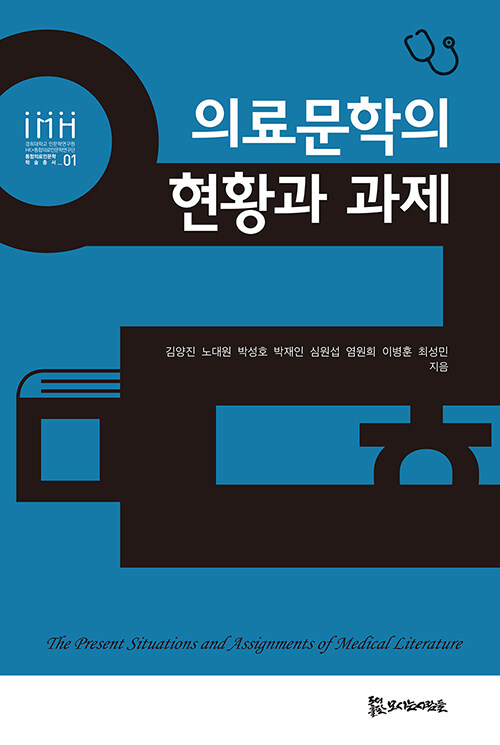
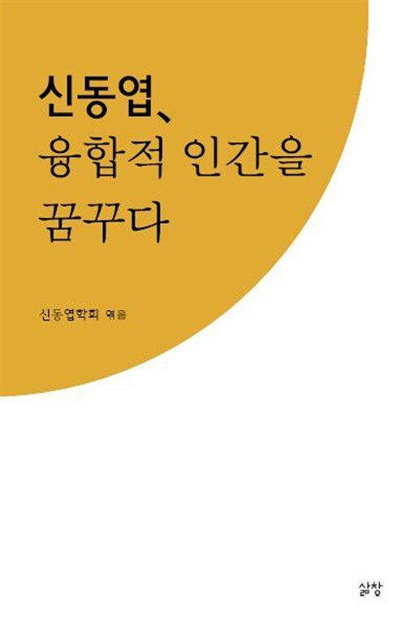

Books & Contributions
저서
Books
단행본

『소설 쓰는 로봇: AI 시대의 문학』
대산문화재단 창작기금 선정 * 책 소개 사이트: https://flo.host/2fBloO4/
AI가 소설을 쓰는 시대에 문학의 창작 주체와 소설의 형식이 어떻게 달라지는지 살핀다. 생성형 AI, AI 문학, SF와 포스트휴먼 논의를 오가며 인간의 창작과 문학의 미래를 비판적으로 질문하는 문학비평서다.

『몸의 인지 서사학: 질병과 치유의 한국 소설』
대한민국학술원 우수학술도서 선정
질병과 치유를 다룬 한국 소설을 대상으로 몸의 감각과 인지, 서사 형식의 관계를 탐구한다. 인지서사학의 관점에서 아픈 몸의 경험이 문학 속에서 어떻게 의미화되고 타인과 세계를 이해하는 방식으로 확장되는지 살핀다.
『한국 포스트휴먼 SF』
한국학중앙연구원 한국학대형기획총서 선정
『AI는 문학이다: 인공지능과 문학의 미래』
한국문화예술위원회 문학 비평담론 활성화(심층비평) 사업 선정
Contributions
공동 저서

「기후 위기 시대의 인공지능: 한국 SF에 나타난 AI와 기후 위기의 서사」, 김은주 외, 『디지털 폴리스 - 디지털 플랫폼, 유토피아, 공동체』, 갈무리, 2024.
디지털 플랫폼이 만든 새로운 사회적 질서와 그 안에서 형성되는 유토피아와 공동체의 가능성을 여러 각도에서 검토하는 공저다. 한국 SF에 나타난 AI와 기후 위기의 서사를 통해 기술이 사회와 생태적 미래를 상상하는 방식을 살핀다.

「AI와 포스트휴먼 예술을 이야기하다 — ChatGPT와의 대화」, 미래융합협의회, 미래융합전략센터 기획, 미래융합협의회 편, 『포스트휴먼과 융합』, 한울아카데미, 2023.
5차 산업혁명의 문턱에서 포스트휴먼 담론과 융합의 의미를 인문학, 과학기술, 예술의 관점에서 함께 탐색하는 공저다. AI와 포스트휴먼 예술을 둘러싼 대화를 포함해 인간·기술·창의성의 관계가 어떻게 재구성되는지 질문한다.

「고통: 아프다, 괴롭다, 살아있다」, 김경윤 외, 『청소년을 위한 두 글자 인문학』, 지노, 2023.
‘고통’을 비롯한 두 글자 낱말을 실마리로 청소년이 일상과 사회, 관계를 새롭게 생각해 보도록 돕는 인문학 앤솔러지다. 짧은 글들을 통해 추상적인 개념을 자신의 삶과 연결해 바라보고 스스로 질문하도록 이끈다.

노대원·황임경, 「팬데믹 포스트휴먼 시대의 취약성」, 김태희 외, 『팬데믹 모빌리티 테크놀로지』, 앨피, 2022.
팬데믹이 이동, 접촉, 노동, 돌봄의 방식을 어떻게 바꾸었는지 모빌리티와 기술의 관점에서 살피는 공저다. 감염병 시대의 취약성과 통제, 이동권, 포스트휴먼적 사회관계의 문제를 여러 분야의 글로 탐구한다.

김양진 외, 『의료문학의 현황과 과제』, 모시는사람들, 2020.
의료와 문학이 만나는 지점을 중심으로 의료문학의 흐름과 쟁점을 정리한 통합의료인문학 학술총서다. 질병과 몸, 돌봄과 치료의 경험이 서사와 문학적 상상력 속에서 어떻게 다뤄지는지 검토하며 앞으로의 연구 과제를 제시한다.

「깡통과 꽃 ― 삶은 어떻게 예술이 되는가」, 신동엽학회 편, 『신동엽, 융합적 인간을 꿈꾸다』, 삶창, 2013.
신동엽의 시와 사상을 ‘융합적 인간’이라는 관점에서 다시 읽는 연구서다. 혁명과 생명, 세계와 공동체, 놀이와 예술을 가로지르는 여러 글을 통해 문학과 현실을 잇고자 했던 시인의 인간관을 조명한다.
“Why does Korea desire AI?,” Eun Ah Cho, et al. eds., Contested Korea: Critical Perspectives on Contemporary Korean Society, Routledge(?), Forthcoming.
“Korean SF Literature, 2010–Present,” Sang-Keun Yoo, et al. eds., The Routledge Companion to Korean Science Fiction, Routledge, Forthcoming.
「2010년 이후의 한국 SF」, 조대한 편, 『한국현대장르문학사』, 현대문학, 근간.